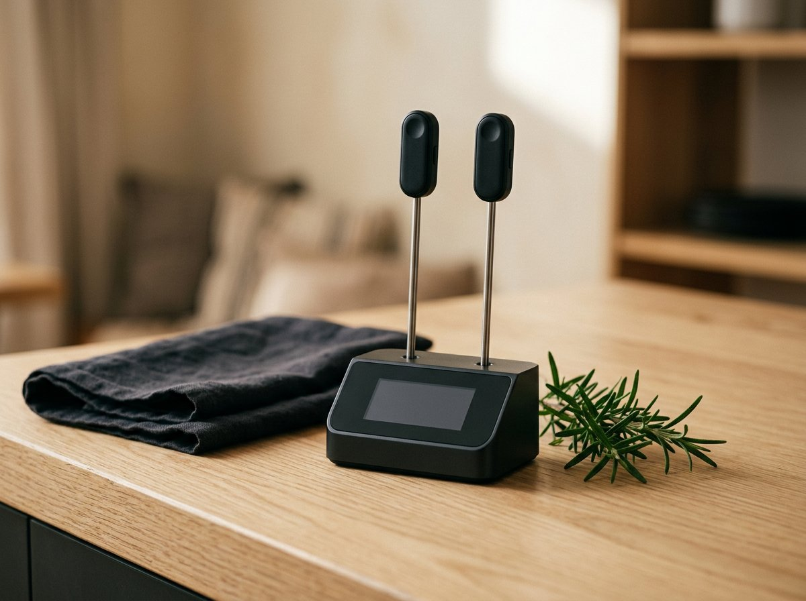

CHEF iQ · Thermometer
The leave-in probe with a radio
Three probes, watched from another room.
Affiliate link — this site earns from qualifying purchases. Price and availability are set by Amazon and are not reproduced here. ASIN B0DZFD6R9Z.
What the listing claims
Every figure below is the manufacturer’s own, taken from the product listing on 20 November 2026. None of it is a measurement made by this desk, and it is labelled as a claim rather than presented as a fact.
Source: Amazon listing, ASIN B0DZFD6R9Z, read 2026-11-20. Category path observed: Home & Kitchen › Kitchen & Dining › Kitchen Utensils & Gadgets › Thermometers & Timers › Meat.
Where a number needed checking
Three probes means three simultaneous temperature readings.
3 probes → 3 readings
Read straight from the listing. Whether the base displays all three at once is not stated in the data available to this desk.
What this page cannot tell you
This is the part that decides whether you are still happy with it in a month, and it is the part most buying pages quietly leave out.
- “Unlimited range” cannot be verified here: WiFi range depends on your router and home. Treat it as “not limited by probe length”, not as a measured distance.
- App platform support, subscription requirements, external dimensions and the exact hub charging time are not stated on the listing as read.
- Battery life is stated twice with different figures — 50 hours in the bullets, 70 hours in the description. See FLG-013.
Why there is no “we tried it” here
This desk has not used this product. FTC guidance on endorsements is explicit that you cannot describe your experience with something you have not tried, so this page does not. What it does instead is compare published specifications and fit, and name what is missing. How we choose · what is still unverified.
Where it sits among the others
ThermoMaven 1-second thermometer — A number in one second, rinsed under the tap.